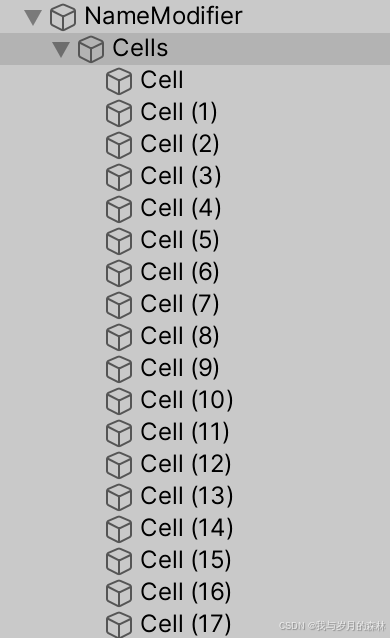
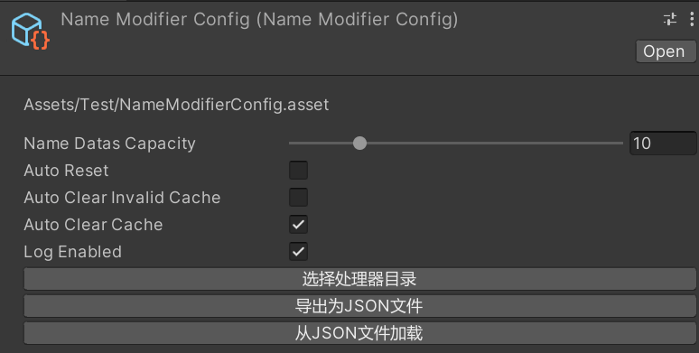
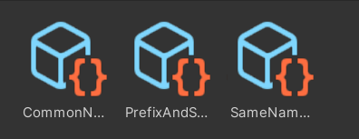

Unity3D批量修改名称工具
前言
该工具用于批量修改场景游戏对象或资产文件的名称，由于不同使用者可能存在不同的需求，所以对于名称修改规则提供了自定义扩展，可以参考示例中的三种规则。
界面说明
首次打开工具，我们需要在Project视图中通过右键菜单创建配置资产（NameModifierConfig），如下图：

配置资产创建完成后，我们可以对工具进行相应的配置，如下图：

在完成基本配置后，我们需要编写自定义的名称修改处理器（Handler），或者直接引用已有的处理器，可以把它们的脚本单独放在一个目录中方便管理，然后在仅用于编辑器时的资源目录中通过右键资源创建菜单去创建各个处理器的 asset 文件。如下图：

最后，在工具配置中选择处理器所在目录，工具就会读取所有处理器，到此该工具的使用前提完成。如下图：

使用说明
工具会识别当前选中的所有对象，并根据当前所选择的处理器进行名称修改，工具具备缓存功能，能够进行撤销和恢复，不过在对大量重要对象进行修改前，若你无法正确评估修改可能带来的风险，最好的方式就是先备份，工具的缓存功能可能存在未知问题，在经过大量正式使用前，应该把它当作一个实验性功能。
注意事项
- 如果修改的是场景游戏对象，注意保存场景文件的修改。
- 如果需要修改预制体中的对象名称，请先将其移动到场景中，完成后应用修改到预制体。
- 修改记录缓存与否以及缓存周期取决于工具配置以及使用者的使用方式，在关闭工具窗口前，修改记录会被缓存，如果没有开启自动清除缓存相关的配置且使用者没有显式清除缓存，那么缓存在本次会话关闭前保留，重新打开项目将无法获取到上次使用时记录的缓存。
版本说明
| 版本号 | 改进说明 |
|---|---|
| …… | …… |
资源下载
免责声明：由于本文内容未经过正规和严格的测试，可能存在错误，因此造成的损失均由使用者自行承担，对本文内容复制、下载、参考等引用行为即默认悉知并同意该声明。
本博客所有文章除特别声明外，均采用 CC BY-NC-SA 4.0 许可协议。转载请注明来源 我与岁月的森林的博客！
评论